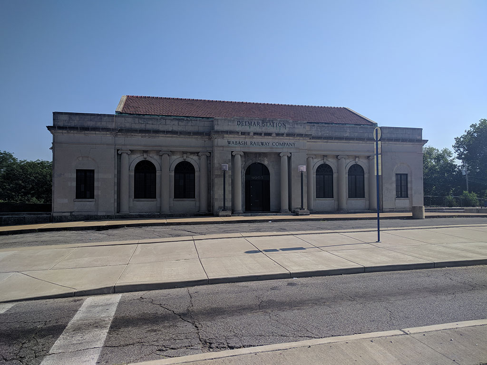
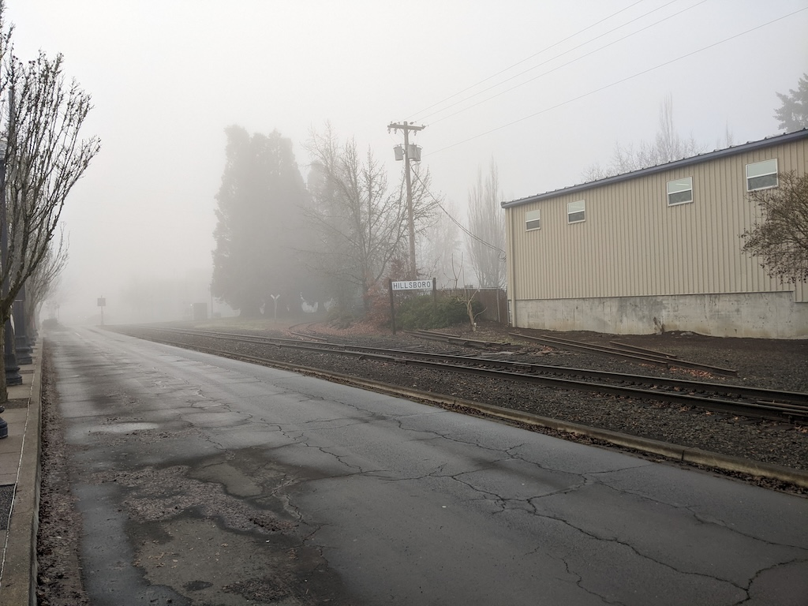
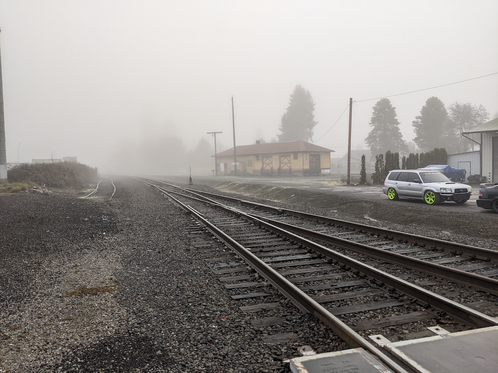
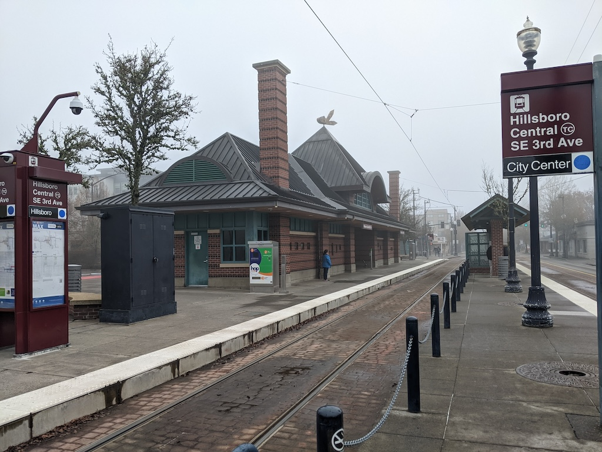

I’m in Portland, Oregon, for the holidays and I just finished writing 600 words about an abandoned railway line that one week ago I’d never heard of. I’d like for you all to meet the Forest Grove branch.
A pattern of behavior
Back in July 2018 I took the train out to St. Louis, Missouri, for WPCampus. I took the Capitol Limited from DC to Chicago, then the Texas Eagle down to St. Louis. In St. Louis, I took the MetroLink light rail out to the Delmar neighborhood where my AirBnb was. I bounded up the steps at the Delmar Loop station and came face-to-face with what could only have been a train station, though it wasn’t one now.

Naturally I wanted to know more about this outpost of the Wabash Railroad in outlying St. Louis. What happened next has become something of a pattern with me. I arrived on July 11. My first research entries on what the Wabash called “Delmar Boulevard” hit Zotero that evening. By the time I left St. Louis on the 15th my Zotero library had expanded by eleven newspaper articles and two books and I felt confident enough to write 700 words on the station for a new Wikipedia article. I didn’t neglect the conference either.
In May 2019, my wife and I visited her aunt in Switzerland. I’ve never properly blogged about that trip, but ten days spent kicking around Switzerland and Lake Constance fired the imagination. I’ve lost count of how much reading and writing I’ve done about Swiss trains since then. The Schweers + Wall railway atlases are my constant companions. I celebrate the date of the annual timetable change (Fahrplanwechsel, always the second Sunday in December) like it’s a holiday.
Hello Portland
We’re in Portland, Oregon, visiting my in-laws. This is far from my first visit–between relatives, Moodle conferences at Reed, the German Studies Association, HighEdWeb, and WPCampus, I’ve been an almost annual visitor since 2009.
This is the first time the railroad bug really bit in Portland. Sure, I’d indexed a few dozen articles in The Oregonian from the local public library back in August 2016, but that hadn’t devolved into a full-blown obsession.
I’ve got a week with no real responsibilities, a Hop card, and large parts of the MAX light rail network unexplored. On a whim, I headed out to Hillsboro, on the western end of the Blue Line. It’s a long haul; fifty minutes from Pioneer Square. 15 miles as the crow flies. I’d done part of this route before. In 2014, HighEdWeb held its big social event at Washington Park. Washington Park is reached from Washington Park station, 260 feet below the surface in the middle of the 3-mile-long Robertson Tunnel.
The west side of the Blue Line can be divided into three parts: (1) the street-running section near Providence Park, (2) new construction, mostly in tunnel or cuts out to Beaverton, and the re-purposed right-of-way from Beaverton to Hillsboro. It’s the latter that got my attention this trip, and after a few days of research I’m able to tell the story of the Forest Grove branch.
Hillsboro
The fog had thickened as I stepped off the train in Hillsboro, at the end of the line. The transition from new build to existing right-of-way had been unmistakable. I’d noted on Google Maps prior to starting out that several railway lines besides the Blue Line converged on Hillsboro, so I started by having a look around.
Historically, two companies served Hillsboro. The Southern Pacific had two lines: one running east-west on the south side, and one that branched off the first line to the north and ran along Adams Avenue. The Oregon Electric, an interurban founded in 1908, ran straight through town on Washington Street, continuing to Forest Grove. The MAX terminus is northeast of the old connection between the Southern Pacific (now Portland and Western) and Oregon Electric.

Three blocks south of the station you come to the wye connecting the ex-Southern Pacific’s two lines. The southeast connection is out of service. The SP’s Hillsboro depot, long disused, is on Cedar Street, just off 1st Avenue.

After stopping for breakfast I walked back into the city center for shopping. A bookstore, two antique stores, a gaming shop, and an “urban farm store.” More than enough diversions to justify the trip out. For the return journey I boarded at Hillsboro Central, which despite opening in 1998 does a good impression of an older facility.

Research
As I rode back into Portland I already knew I wanted to know more about the branch line leading away from the MAX line in Hillsboro. I assumed, incorrectly as it turned out, that the Blue Line had been a conversion job similar to the Highland branch in suburban Boston.
The research and writing was a two-day process. The first step when encountering a new railway line is to figure out (1) who owned it and (2) what it was called, with the caveat that as ownership changes lines accumulate names. For lines in the United States, Old Maps Online is a good resource. USGS maps show railway lines and label the owners; 1:24000 scale is preferable to 1:62500 for detail. From these I learned that I was dealing with the Oregon Electric Railway, an interurban that survived the electric era.
Given an owner and a point in time, you can work backward and forward as needed. The ICC Railroad Valuation Records can be a good resource if the line was owned by a Class I railroad at the appropriate time. These are all scanned on Google Books and Wikipedia has a good index. In this case the ICC reports weren’t helpful; the Oregon Electric was stock controlled by the Spokane, Portland and Seattle Railway at the time and the report doesn’t discuss it in any detail. Employee timetables can be helpful for route mileage.
Railroad line ownership gets messy when you’re talking about light-density branches in the 1970s onwards. The big railroads started spinning off smaller lines to a dizzying succession of shortline railroads. Cities and states get involved too with subsidies, if not outright ownership. Some lines are “railbanked” and turned into trails. These activities do generate a paper trail: environmental studies, Interstate Commerce Commission abandonment exemption proceedings, newspaper reporting. The latter seems to trail off in the 1990s as the importance of the railroad as employer fades. If you’re working with one of the bankrupt East Coast railroads that became part of Conrail, the final system plan of the United States Railway Association (Volume I, Volume II) is crucial. No help on the West Coast.
Newspaper archives are all over the place. If you have Newspapers.com that turns up a lot of resources, but not everything is in there. I discovered the wonderful Historic Oregon Newspapers archive at the University of Oregon, and found some useful articles from the Hillsboro Argus. I’ve found similar sites for the state of New York and for Switzerland. The paper I really needed was the Oregonian, which is in Newsbank. In the end, I took a bus over to the local outpost of the Multnomah County Library system because they have a subscription.
I have a digital subscription to Trains magazine and full access to their digital archive. The quality is high, but selective. I found a discussion of the Portland and Western, which took over the line in 1997, but not much that was useful for the Oregon Electric.
Outcome
Two days to do enough research to write 600 words: Forest Grove branch. My Zotero library grew by 33 entries. I am now temporarily very aware of a 19-mile branch line that’s now fully abandoned. The Forest Grove branch handled electrified freight and passenger service for 24 years, electrified freight only for another 13, and then became a slowly shrinking unelectrified freight line for almost 80 years. Since 1998, half of it (the right-of-way, at any rate) hosts electrified passenger service again.
There’s more to do, of course. Some parts of the line are or will become trails. The Oregon Department of Transportation might own the easement west of Hillsboro; I couldn’t nail that down. But already I’m feeling it slipping away. Once I get my photo album from this trip synced I’ll probably close the book on the Forest Grove branch for good.
Hell of a ride though.